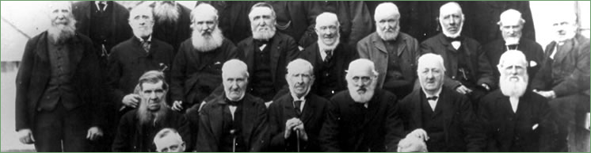
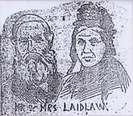
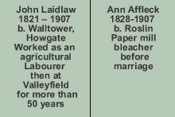

Early Papermakers
 |
{kind=link}
In 1898 John and Ann celebrated their Golden Wedding, an occasion which was reported in two newspapers. |
||||
{kind=link}
  John's son, also John Laidlaw, was another long serving worker at Valleyfield Mill as reported on the occasion of his Golden Wedding in 1930. |
GOLDEN WEDDING – Mr and Mrs John Laidlaw on Saturday celebrated the fiftieth anniversary of their wedding at Penicuik, when about forty relatives and friends were present. Mr Laidlaw, who is 78 years of age, was born at Howgate, and in his young days was engaged in farm service. On his marriage in 1848 he entered the employment of Messrs Alex Cowan & Sons, Limited, Valleyfield in whose service he is still. Mrs Laidlaw is a native of Lasswade, where her father was a butcher. Mr. Laidlaw is one of the most enthusiastic members of Valleyfield Bowling Club, and carries his age well. The aged couple were on Saturday the recipients of a purse of sovereigns, an easy chair, and numerous other gifts from relatives and friends. John’s long-standing relationship with the Valleyfield Mill was recognised when he was selected to bear the workers’ wreath at the funeral of Sir John Cowan in October 1900.
The wreaths and flowers were hung round the walls of the hall, and some of them were very pretty yet simply got up. The Valleyfield Workers’ wreath was laid on the coffin by Mr John Laidlaw, the oldest worker. GOLDEN WEDDING – This week Mr and Mrs John Laidlaw, 42 Bridge Street, celebrated their Golden wedding. Mr Laidlaw is 79 years of age and Mrs Laidlaw 80. They have had eight children and 19 grandchildren. Mr Laidlaw has been employed at Valleyfield Mill for 58 years, and he has been a member of the local Salvation Army Corps for 41 years. Mrs Laidlaw has been in indifferent health for some time. |
|||


Penicuik Historical Society :: Penicuik Town Hall :: 33 High Street :: Penicuik :: EH26 8HS
e-mail :: info@penicuikpapermaking.org
e-mail :: info@penicuikpapermaking.org
© Penicuik Historical Society :: site by Wallace Web Design